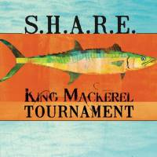

|
Far Out Shoot Out |
May 5-19, 2018 |
Ocean Isle Fishing Center, Ocean Isle Beach NC |
TBD |
|
Yellowfin/Yamaha Jolly Mon King Classic |
June 13-17, 2018 |
Ocean Isle Fishing Center, Ocean Isle Beach NC |
TBD |
|
East Coast Got Em On |
TBA
| Carolina Beach Yacht Basin, Carolina Beach, NC |
TBD |
|
James Island Yacht Club |
TBA |
James Island Yacht Club, James Island, SC |
TBD |
|  |
S.H.A.R.E. King Mackerel Tournament |
August 10-12th, 2018 |
Dockside Marina, Wrightsville Beach, NC |
TBD |
|
Fishing For Micarles King Mackerel Tournament |
August 16-18th, 2018 |
Ripley Light Yacht Club, Charleston, SC |
TBD |
|
South Brunswick Island King Classic |
TBA |
Inlet View Bar & Grill, Shallotte Point, NC |
TBB |
|
Shallotte Point King Classic |
TBA |
Inlet View Bar & Grill, Shallotte Point, NC |
TBB |
|
U.S.Open King Mackerel Tournament |
Oct 4th-6th, 2018 |
Southport Marina, Southport, NC |
TBB |
|
Yellowfin/Yamaha Fall Brawl King Classic |
October 12-14, 2018 |
Ocean Isle Fishing Center, Ocean Isle Beach, NC |
TBB |
 |
Rumble In the Jungle |
TBA |
Harbour Gate Marina, Litte River, SC |
TBD |
 |
Marlin Quay King Mackerel Shootout |
TBA |
Marlin Quay Marina, Garden City, SC |
TBD |
|
S.K.A Nationals |
Nov 8-11 2018 |
Morehead City, NC |
TBD |
|
King Fish Cup Championship |
TBA |
Ocacroke, NC |
TBD |